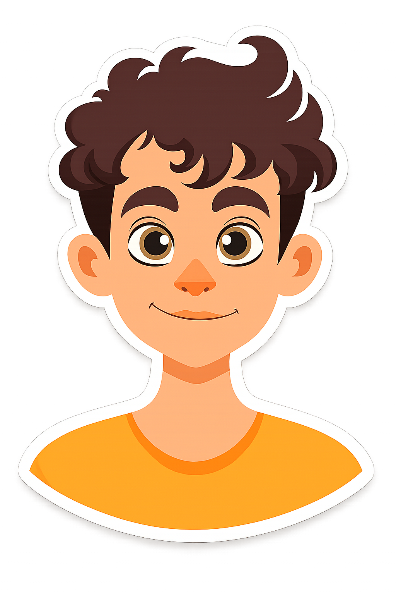

Accueil
| Accueil | Productions scolaires | Mes passions | Mes vidéos | Mon site de rêve |
|---|

Je m’appelle Nasri Mahieddine, j’ai 16 ans et je suis élève de seconde au lycée Sacré-Cœur à Tourcoing. Je suis quelqu’un de dynamique, curieux et motivé. J’aime apprendre de nouvelles choses, surtout dans le domaine du numérique et de l’informatique. Je m’intéresse aussi au sport et à tout ce qui touche au travail en équipe. À travers ce site, je vous présente mes productions scolaires ainsi que ce que j’aime faire en dehors du lycée.
Projet SNT - Dernière mise à jour : 15/12/2025
Les textes et images utilisés n'engagent que leur auteur : Mahieddine